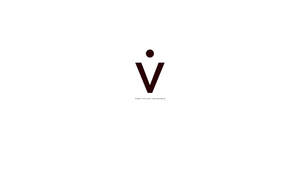

Trade Mark Journal No.2025/031 1 August 2025
UK00004238165 23 July 2025 (1,3,5,10,21,41,44)
Mark 1
Mark 2
Mark 3

- Class 1
- Antioxidants for use in the manufacture of cosmetics; Hyaluronic acid.
- Class 3
- Anti-ageing moisturiser; Anti-ageing creams; Anti-ageing serum; Anti-ageing creams [for cosmetic use]; Beauty serums with anti-ageing properties; Anti-aging creams; Anti-aging moisturizers; Anti-aging cream; Anti-aging creams [for cosmetic use]; Anti-aging skincare preparations; Anti-ageing serums for cosmetic purposes; Anti-wrinkle creams; Anti-aging moisturizers used as cosmetics; Anti-wrinkle creams [for cosmetic use]; Anti-wrinkle cream [for cosmetic use]; Anti-wrinkle cream; Anti-aging serum for cosmetic use; Moisturising skin creams [cosmetic]; Moisturising creams; Cosmetic moisturisers; Cosmetic nourishing creams; Moisturising skin lotions [cosmetic]; Skincare cosmetics; Facial moisturisers [cosmetic]; Moisturisers [cosmetics]; Creams for firming the skin; After-sun creams; Moisturizing creams; Moisturiser; Moisturisers; Beauty serums; Exfoliating creams; Skin moisturiser; Skin moisturisers; Skin creams [cosmetic]; Skin creams [for cosmetic use]; Cosmetic creams for the skin; Skin hydrators; After-sun lotions [for cosmetic use]; Moisturising body lotion [cosmetic]; Skin moisturizers used as cosmetics; Moisturising concentrates [cosmetic]; Sunscreen creams [for cosmetic use]; Moisturising gels [cosmetic]; Hydrating creams for cosmetic use; Skin whitening creams; Creams (Skin whitening -); Toning creams [cosmetic]; Exfoliant creams; Suncare lotions [for cosmetic use]; After-sun oils [cosmetics]; Cleansing creams [cosmetic]; Aftershave moisturising cream; Facial creams [cosmetics]; Skin recovery creams [cosmetics]; Cosmetic preparations for skin firming; Skin cream [for cosmetic use]; Skin care creams [cosmetic]; Cosmetic creams for skin care; Retinol cream for cosmetic purposes; Facial creams [cosmetic]; Facial creams [for cosmetic use]; Cosmetic massage creams; Creams (Cosmetic -); Cosmetic creams; Skin hydrators being injectable dermal fillers; Skin hydrators for cosmetic purposes; Cream for whitening the skin; Whitening the skin (Cream for -); Wrinkle resistant creams [for cosmetic use]; Suntan creams [self-tanning creams]; Sun creams [for cosmetic use]; After-sun milk [cosmetics]; Beauty creams; Cosmetic creams for firming skin around eyes; Body firming creams; Non-medicated skin serums; Skin creams; Creams for the skin; Skin moisturizers; Skin moisturizer; Aromatherapy creams; Creams for tanning the skin; After-sun milks [cosmetics]; Acne cleansers, cosmetic; Body and facial creams [cosmetics]; Beauty balm creams; Cosmetic creams and lotions; Skin relief serum [cosmetic]; Cosmetic skin enhancers; After-sun lotions; Sun protecting creams [cosmetics]; Skin balms [cosmetic]; Moisturising creams, lotions and gels; Facial cream [for cosmetic use]; Skin toners [cosmetic]; Skincare preparations; Dermatological creams [other than medicated]; Skin cleansers [cosmetic]; Cosmetics for use in the treatment of wrinkled skin; Self tanning creams [cosmetic]; Body creams [cosmetics]; Skin whitening preparations [cosmetic]; Exfoliants for the cleansing of the skin; Moisturizing preparations for the skin; Skin care lotions [cosmetic]; Skin cleansing cream; Facial moisturizers; Facial creams; Skin conditioning creams for cosmetic purposes; Pro-collagen for cosmetic purposes; Hair care creams [for cosmetic use]; Mattifying gel cream; Sunscreens [for cosmetic use]; Sunscreen creams; Skin emollients; Sunscreen [for cosmetic use]; Cosmetics in the form of creams; Creams for cellulite reduction; Exfoliants for the care of the skin; Suncare lotions; Cosmetic facial lotions; Facial lotions [cosmetic]; Oils for moisturising the skin after sunbathing; Cosmetic sun-protecting preparations; Moisturizers; Cosmetic products in the form of aerosols for skincare; Cosmetic creams for dry skin; Cleansing creams; Hair moisturisers; Skin lightening creams; Sun-tanning creams; Facial toners [cosmetic]; Facial serum for cosmetic use; Facial cleansers [cosmetic]; Cosmetic facial masks; Facial masks [cosmetic]; Facial scrubs [cosmetic]; Cosmetic hair lotions; Facial concealer; Facial washes [cosmetic]; Self tanning lotions [cosmetic]; Eyebrow cosmetics; Facial makeup; Hair care lotions [for cosmetic use]; Facial lotions; Cosmetics for eye-brows; Hair tonic [for cosmetic use]; Hair rinses [for cosmetic use]; Cosmetic facial packs; Facial packs [cosmetic]; Face creams for cosmetic use; Lotions for cellulite reduction; Facial cream; Facial gels [cosmetics]; Hair tonics [for cosmetic use]; Cosmetic breast firming preparations; Hair desiccating treatments for cosmetic use; Cosmetic face powders; Face powders [for cosmetic use]; Cosmetic suntan lotions; Lip cosmetics; Facial lotion; Hair serums; Hair preservation treatments for cosmetic use; Wax treatments for the hair; Massage creams, not medicated; Cosmetic pencils for cheeks; Cosmetics containing hyaluronic acid; Collagen for cosmetic purposes; Cosmetic kits; Topical skin sprays for cosmetic purposes; Gels for cosmetic use; Cosmetic eye gels; Hydrolyzed collagen for cosmetic purposes.
- Class 5
- Moisturising creams [pharmaceutical]; Medicinal creams for the protection of the skin; Anti-oxidant supplements; Serums; Medicinal creams for skin care; Moisturising body lotion [pharmaceutical]; Antioxidants; Antioxidant pills; Acne creams [pharmaceutical preparations]; Niacinamide preparations for the treatment of acne; Therapeutic creams [medical]; Acne cream [pharmaceutical preparations]; Pharmaceutical skin lotions; Creams for dermatological use; Injectable dermal fillers; Injectable dermal filler; Creams (Medicated -) for the lips; Medicated skin creams.
- Class 10
- Implants [prosthesis] for use in facial surgery; Lasers for use in surgery; Syringes for injections; Implants [prosthesis] for dental surgery; Needles for injections; Implants [prosthesis] for use in jawbone surgery; Silicone preparations for cosmetic implantation; Transplant protheses for use in surgery; Intra-ocular implants; Silicone prosthetic implants; Silicone orthopedic implants; Prosthetics and artificial implants; Breast implants; Implants [prosthesis] for bone surgery.
- Class 21
- Cosmetic apparatus for microdermabrasion; Microdermabrasion sponges for cosmetic use.
- Class 41
- Medical education services; Education; Medical training and teaching.
- Class 44
- Laser skin rejuvenation services; Cosmetic laser treatment of skin; Surgery (Cosmetic -); Cosmetic and plastic surgery; Cosmetic laser treatment of tattoos; Cosmetic treatment for the hair; Cosmetic laser treatment of varicose veins; Injectable filler treatments for cosmetic purposes; Cosmetic treatment for the face; Cosmetic and plastic surgery clinic services; Cosmetic electrolysis; Cosmetic treatment; Cosmetic laser treatment of spider veins; Cosmetic surgery services; Cosmetic facial and body treatment services; Cosmetic laser treatment of unwanted hair; Cosmetic electrolysis for the removal of hair; Cosmetic treatment services for the body, face and hair; Cosmetic laser treatment for hair growth; Cosmetic treatment for the body; Plastic surgery; Surgery (Plastic -); Liposuction services; Surgery; Beauty therapy treatments; Cosmetic dentistry; Cellulite treatment services; Facial beauty treatment services; Medical and healthcare services; Medical and healthcare clinics; Health clinic services [medical]; Medical care; Medical services; Medical clinic services; Clinic (Medical -) services; Clinics (Medical -); Medical clinics.
Elite Plus Marketing Management LLC
Representative: MOHAMMED SEFAHN CHAUDHRY